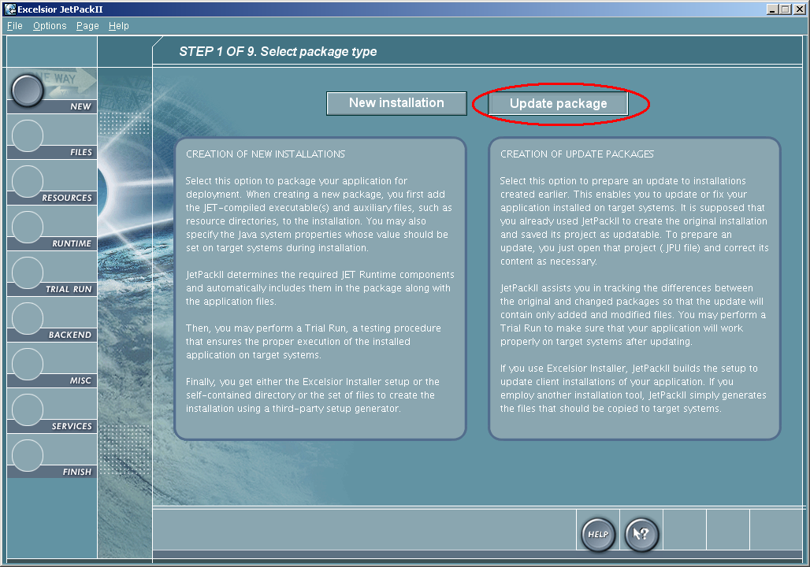
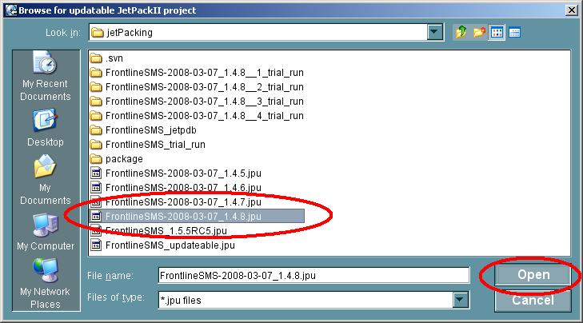

Building an update with Excelsior Jet
This file contains instructions on how to build a distributable update for FrontlineSMS using Excelsior JET.
N.B. this builds an update for the Windows binary distribution of FrontlineSMS. It should therefore be done on a Windows machine.
Durations shown are rough times taken on Alex's computer - Athlon 64 X2 3800+ 2GHz with 2Gb of RAM. It might take a while on older hardware.
-
Build the project
Run the ANT task
package_windows_jet.BUILD SUCCESSFUL Total time: 21 seconds
-
Build the project again
Run the JET build with the following command:
jc -quiet =p =a ".\FrontlineSMS.prj". This must be done inside the jetPacking directory.XDS Link Version 2.11.12 Copyright (c) Excelsior 1995-2007. No errors, no warnings Link time 0:36.87 Total compilation time 14:14.57
-
Run JetPackII

-
Select New

-
Select Update
 -
Open the package you want to update
E.g. if I wanted to update FrontlineSMS 1.4.8, I open the file FrontlineSMS_1.4.8.jpu. This was generated when I built the 1.4.8 release.
 -
Ignore warning

-
Ignore changes

-
Update resources
Select all files inside
%project_home%/jetPacking/package/, except for those ending.jar, on the right-hand side (excluding FrontlineSMS.exe), and <- them across to the left-hand side. Then click the -> arrow at the bottom.
-
Ignore warnings
Click "proceed" to ignore "duplicate names of dynamic libraries" error.
-
Forward
Click ->
-
Forward
Click -> again
-
Run project
If you are told to save it now, do it somehwere temporary, as we don't need this.
-
Update version
Change the verswion number to the current version.
-
Create the package
Click the create button to begin creating the package.